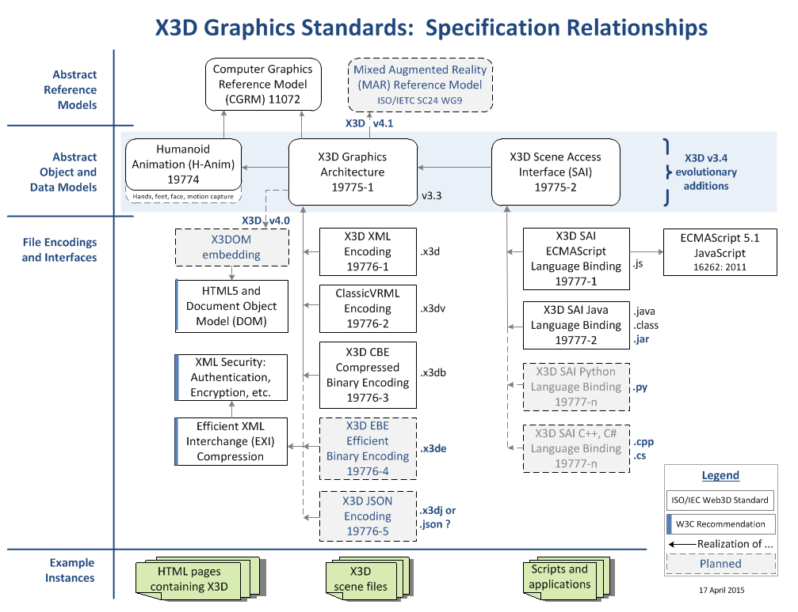

|
X3D Specifications: XML Schema and DOCTYPE Validation |
Validation assets | Autogenerated products | Supporting resources | All assets | Contact
These X3D Specifications assets include the latest versions of recommended XML Schemas and DOCTYPEs (DTDs) for the X3D International Standards, maintained by Web3D Consortium's X3D Working Group.
These assets are commonly used for XML validation of X3D scenes, and in-depth documentation is also provided here. Technical details are found in the Recommended X3D Standards.
Current XML validation assets
|
 |
The X3D schema contains complete information about the X3D scene graph and object hierarchy. Since the schema is expressed as an XML document, XSLT stylesheets can produce corresponding HTML documents or even source code for X3D APIs in full detail.
Current contents of this archive directory follow.
Questions, suggestions and comments about these resources are welcome. Please send them to Don Brutzman (brutzman at nps.edu)
Available online at http://www.web3d.org/specifications
Version control of these master X3D DTD and Schema assets is maintained at
https://sourceforge.net/p/x3d/code/HEAD/tree/www.web3d.org/specifications
See the changelog files or subversion archives for detailed records of DTD and Schema updates. Contained assets are released following review and approval by Web3D Consortium members and the X3D Working Group.
Updated: 8 June 2015
{kind=link}